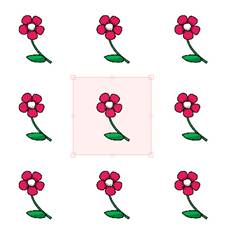
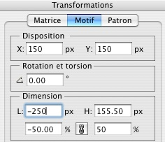
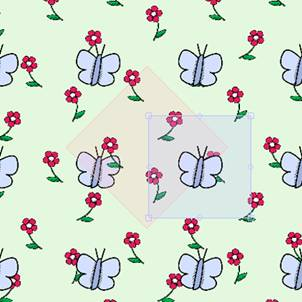

Ouvrez un nouveau document ( + N)
Une boîte de dialogue vous invite à rentrer la largeur et la hauteur de votre image et sa résolution.
Rentrez « A4 » dans les formats prédéfinis.
Importez le motif fleur disponible dans la banque de motifs ( + D)
Une matrice est crée automatiquement.

Agrandissez la matrice en maintenant Shift enfoncé (pour ne pas la déformer) et effectuez une rotation de 45° :

Sélectionnez le motif et dupliquez le : ( + R)
Remarque : Si vous voulez supprimer un motif, sélectionnez le et appuyer simplement sur suppr.

Déplacez le nouveau motif, faites le pivoter. Vous pouvez aussi lui appliquer une symétrie en précédent d’un moins sa valeur (horizontale ou verticale) des champs dimensions de la fenêtre Transformations.


De cette manière, en répétant l’opération, composez un réseau avec ce motif.

Rappelez vous que vous pouvez changer la couleur d’arrière plan.
Créez une nouvelle matrice ( + M).
Dans celle-ci importez le motif Papillon ( + D)

Cette nouvelle matrice est complètement indépendante.
Avoir plusieurs matrice vous permet de superposer sur un même document plusieurs réseaux.
 *
*
Désactivez la case « afficher le cadre de sélection pour avoir un rendu de votre réseau sans les matrices.